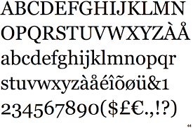
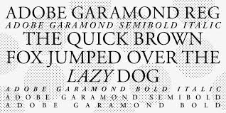

Familije Fontova
Nenad Andrić i Miloš Krulanović
Sans-serif
Sans-serif fontovi nemaju serife.Sans-serif pisma obično imaju manje varijacije u širini poteza od serifnih pisama. Često se koriste za prenošenje jednostavnosti i modernosti ili minimalizma Često se koriste za moderne i čiste dizajne.
Upotrebljivost: Web dizajn, prezentacije, korporativni materijali.
Saznaj višeArial
Specifičnosti: Arial je moderan font bez serifa. Karakteri su ujednačene širine, što ga čini izuzetno čitljivim.
Primjena: Koristi se u web dizajnu, prezentacijama, korporativnim materijalima i oglasima.
Izgled: Ravne linije, jednostavni oblici, bez ukrasa na krajevima karaktera.
Saznaj višeHelvetica

Specifičnosti: Helvetica je jedan od najpopularnijih sans-serif fontova. Poznat po neutralnom i modernom izgledu.
Primjena: Koristi se u brendiranju, štampi i digitalnim medijima.
Izgled: Ravne linije, ujednačeni razmaci, visoka čitljivost.
Saznaj višeVerdana
Specifičnosti: Verdana je dizajnirana za visoku čitljivost na ekranima. Karakteri su široki i jasni.
Primjena: Koristi se u web dizajnu i digitalnim medijima.
Izgled: Široki karakteri, veliki razmaci, optimizovan za ekrane.
Saznaj višeSerif
Serif fontovi imaju ukrase na krajevima karaktera.Pismo ili "familija fontova" koja koristi serife naziva se serifno pismo (ili serifno pismo ), a pismo koje ih ne uključuje je sans-serif . Često se koriste u formalnim i tradicionalnim dizajnima.
Upotrebljivost: Knjige, novine, akademski radovi.
Saznaj višeTimes New Roman

Specifičnosti: Times New Roman je klasičan serif font. Karakteri su uski, sa izraženim serifima.
Primjena: Koristi se u štampi, knjigama, novinama i akademskim radovima.
Izgled: Formalni izgled, uski karakteri, izraženi serifi.
Saznaj višeGeorgia
Specifičnosti: Georgia je serif font dizajniran za čitljivost na ekranima. Karakteri su širi i jasniji.
Primjena: Koristi se u web dizajnu i digitalnim medijima.
Izgled: Široki karakteri, visoka čitljivost, moderan izgled.
Saznaj višeGaramond
Specifičnosti: Garamond je elegantan serif font sa tankim linijama i klasičnim izgledom.
Primjena: Koristi se u knjigama, časopisima i formalnim dokumentima.
Izgled: Elegantni serifi, tanke linije, klasičan izgled.
Saznaj višeMonospace
Monospace fontovi imaju karaktere iste širine.Font s jednim razmakom , koji se naziva i font fiksnog razmaka , fiksne širine ili neproporcionalni font , je font čija slova i znakovi zauzimaju jednaku količinu horizontalnog prostora. Često se koriste u programiranju i tehničkoj dokumentaciji.
Upotrebljivost: Programiranje, pisaći mašini, tehnička dokumentacija.
Saznaj višeCourier New

Specifičnosti: Courier New je klasičan monospace font. Karakteri su ravni, sa malim serifima.
Primjena: Koristi se u programiranju, tehničkoj dokumentaciji i pisaćim mašinama.
Izgled: Ravni karakteri, retro izgled, ujednačena širina.
Saznaj višeConsolas
Specifičnosti: Consolas je moderan monospace font. Karakteri su čitljivi i optimizovani za ekrane.
Primjena: Koristi se u programiranju i tehničkoj dokumentaciji.
Izgled: Čist izgled, visoka čitljivost, moderan dizajn.
Saznaj višeRoboto Mono

Specifičnosti: Roboto Mono je monospace font sa geometrijskim oblicima. Karakteri su ujednačeni i čitljivi.
Primjena: Koristi se u programiranju i tehničkoj dokumentaciji.
Izgled: Geometrijski oblici, moderan izgled, visoka čitljivost.
Saznaj višeDisplay
Display font familija široka je kategorija fontova koji su dizajnirani za aplikacije kratkog i često velikog formata, kao što su oglasne ploče ili posteri; logotipi; naslovi ili naslovi u časopisima ili na web stranicama; i naslovnice knjiga. Fontovi za prikaz nadilaze stilove—mogu biti serifni font, slab serif, didone, skripta, sans serif i tako dalje. Mnoga su slova dizajnirana isključivo kao fontovi za prikaz i imaju niz ukrasnih značajki, kao što se vidi u Walbaumu. Neka pisma, kao što je Helvetica Now, uključivat će verziju za prikaz u kojoj je izvorni dizajn ukrašen ili preuveličan za korištenje u većim veličinama.
Upotrebljivost: Naslovi, oglasi, dekorativni dizajn.
Saznaj višeComic Sans

Specifičnosti: Comic Sans je neformalni font sa rukopisnim izgledom. Karakteri su neravni i dečje naravi.
Primjena: Koristi se za dečje materijale, neformalne poruke i oglase.
Izgled: Rukopisni stil, zaobljeni karakteri, neformalni izgled.
Saznaj višeImpact
Specifičnosti: Impact je sans-serif font sa širokim karakterima. Često se koristi za naslove i oglase.
Primjena: Koristi se za naslove, oglase i dekorativni dizajn.
Izgled: Široki karakteri, upečatljiv izgled, visoka čitljivost.
Saznaj višeLobster
Specifičnosti: Lobster je dekorativni font sa rukopisnim izgledom. Karakteri su zaobljeni i elegantni.
Primjena: Koristi se za naslove, oglase i dekorativni dizajn.
Izgled: Rukopisni stil, zaobljeni karakteri, elegantan izgled.
Saznaj višeScript
Skriptni tipovi temelje se na raznolikom i često fluidnom potezu stvorenom rukopisom .Skriptni tipovi su organizirani u vrlo pravilne formalne tipove slične kurzivnom pisanju i labavijim, ležernijim pismima. Često se koriste za elegantne i formalne dizajne.
Upotrebljivost: Pozivnice, logotipi, dekorativni dizajn.
Saznaj višeBrush Script

Specifičnosti: Brush Script imitira rukopis sa četkicom. Karakteri su fluidni i elegantni.
Primjena: Koristi se za pozivnice, logotipe i dekorativni dizajn.
Izgled: Rukopisni stil, fluidni karakteri, elegantan izgled.
Saznaj višePacifico
Specifičnosti: Pacifico je moderan script font sa zaobljenim karakterima. Karakteri su veseli i neformalni.
Primjena: Koristi se za logotipe, oglase i dekorativni dizajn.
Izgled: Rukopisni stil, zaobljeni karakteri, neformalni izgled.
Saznaj višeDancing Script

Specifičnosti: Dancing Script je elegantan script font sa fluidnim karakterima. Karakteri su umetnički i dekorativni.
Primjena: Koristi se za pozivnice, logotipe i dekorativni dizajn.
Izgled: Rukopisni stil, fluidni karakteri, umetnički izgled.
Saznaj višeHvala na pažnji!
Nenad Andrić i Miloš Krulanović